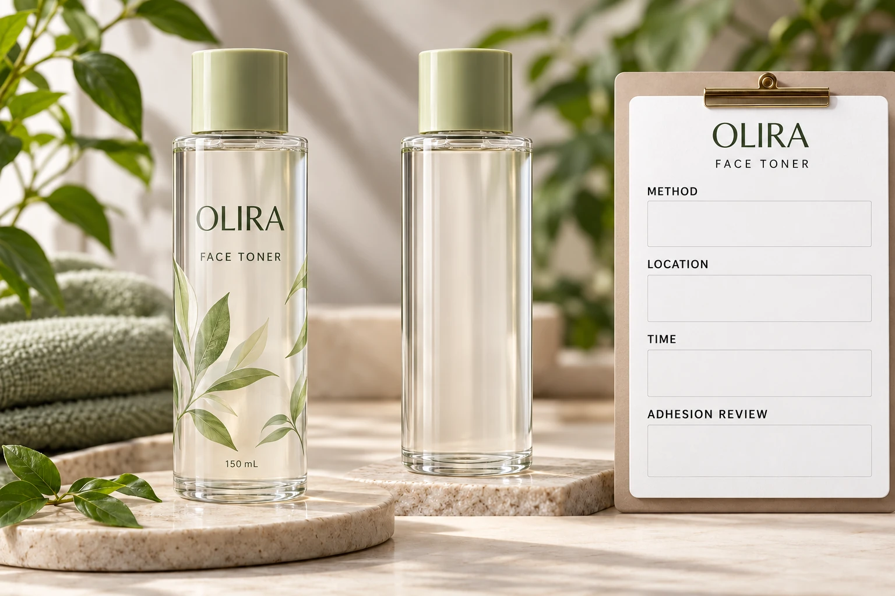

Keep the property and the method together
Ask what was measured, by which method and on which sample. Do not convert an informal statement such as treated surface into a complete measurement report. A test-ink observation and another surface-characterisation method may require different interpretation.
Enercon's dyne-testing overview warns that poorly executed tests can mislead and that dyne levels do not guarantee adhesion. Its subject is surface-treatment evidence, not approval of the particular cosmetic bottle and label in your order.
Have the competent test owner explain the result's scope and limitations. This article does not teach chemical test execution or provide a target value. Test materials and procedures require the relevant technical and safety controls; purchasing should request the report rather than improvise a demonstration.
Identify the exact surface and location
Record the bottle reference, material, coating or treatment and sample identity. Ask where the observation was taken: the intended label panel or a different part of the container. A result from a flat raw-material sample should be identified as such rather than presented as a measurement on the finished bottle.
Keep the location visible in a marked drawing or photograph where useful. If several relevant areas differ, ask the technical owner how the review should represent them. One convenient accessible patch should not silently stand for every surface the label contacts.
The adhesive data guide explains why unlike measurements should not be ranked together. A surface-wetting observation is not a peel-force result, even if both appear in the same supplier presentation.
Preserve timing and handling context
Ask when the surface was treated, when it was assessed and what relevant storage or handling occurred before labeling. If the timing is unknown, retain that gap. Do not rewrite an old report as evidence collected at today's filling operation.
Where the technical reviewer needs a current or representative measurement, obtain an agreed scope and sample. Do not infer a universal expiry interval from a general article. The relevant surface, treatment and conditions need the test owner's interpretation.
Also ask whether the measurement method is appropriate for the substrate. Enercon's discussion of dyne-test variables identifies substrate interactions and method consistency as relevant limitations. It does not make any one method automatically appropriate for every curved or coated bottle.
Connect the report to the purchasing question
Use one row for each identified result. Avoid a single column called surface quality that strips away the information needed to interpret it.
| Field | Record | Question for the technical reviewer |
|---|---|---|
| Sample | Container, surface and batch reference | Does this represent the proposed pack? |
| Location | Marked assessed area | Does it represent the label panel? |
| Method | Named procedure and responsible test owner | Is the result valid for this substrate? |
| Result | Original value, units and stated status | What conclusion does the report support? |
| Timing | Treatment, assessment and relevant handling | Does the history match the intended application? |
| Construction | Actual proposed label and adhesive | Which interface still requires evaluation? |
| Next decision | Missing evidence, reviewer and action | What prevents a supported release? |
Reconcile sample and method first. Ask the test owner to identify meaningful limitations, then ask the label supplier what further evidence is needed for the proposed adhesive. Use a representative bottle sample under agreed conditions and keep the resulting decision connected to the actual construction.
The adhesive sample-planning guide helps organise that evaluation. A data report can inform the plan; it cannot replace observations that the report never made.

Do not use treatment as an unexplained cure
A hypothetical repeat project may have identifiable surface evidence and applicable label approval under unchanged conditions. Its next step can be confirming those references and the current supply, rather than seeking a higher number without a decision to make.
A new plastic bottle with uncertain treatment history needs a more explicit technical review. If additional treatment is proposed, the responsible process owner must establish suitability and implementation. Purchasing should not prescribe equipment settings or assume that treatment alone resolves every cause of a poor applied result.
For cosmetic bottle labels, provide the container, artwork, dimensions, quantities and the complete surface report. Identify the proposed adhesive and the unresolved question. The inquiry form prepares a message; send reports separately by email or WhatsApp. Keep the number attached to the surface, method and decision it actually represents.